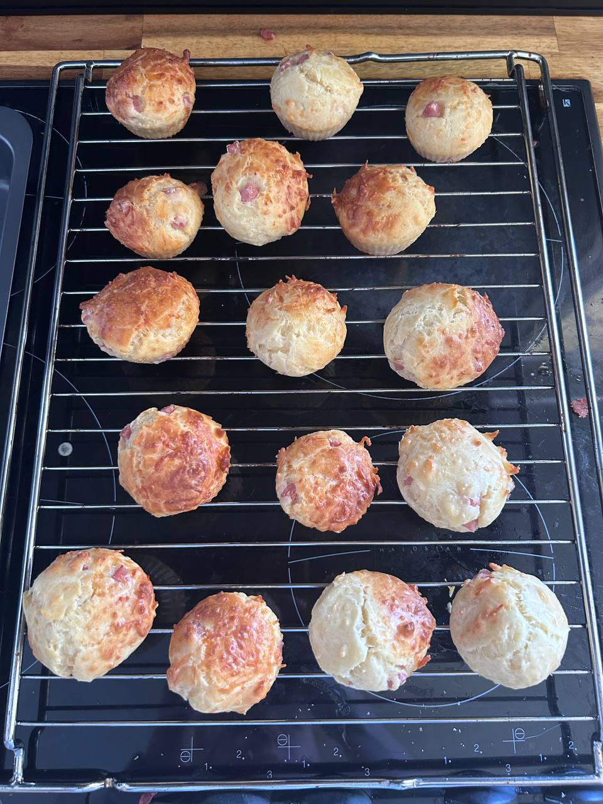

← Recettes

Muffins Jambon Fromage
⏱️ 10 min
🔥 20 min
👥 16-20 muffins
🍽️ Plat
Ingrédients
- 250 g de farine
- 3 œufs
- 150 g de lait
- 100 g d'huile
- 1 sachet de levure
- 150 g de dés de jambon
- 100 g de fromage râpé
- Ciboulette ou persil
- Sel, poivre
Préparation
-
1Préchauffer le four à 180°C
-
2Fouetter les œufs avec le lait et l'huile
-
3Ajouter la farine et la levure, mélanger jusqu'à obtenir une pâte épaisse
-
4Incorporer le jambon, le fromage râpé et les herbes (mélange souple, sans trop travailler la pâte)
-
5Remplir les moules à muffins aux 3/4
-
6Enfourner 20 min à 180°C — la pointe d'un couteau doit ressortir sèche
-
7Laisser tiédir sur une grille